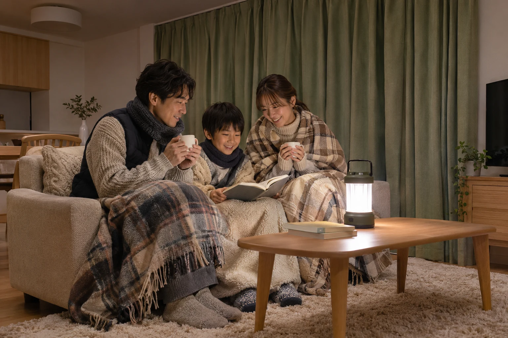
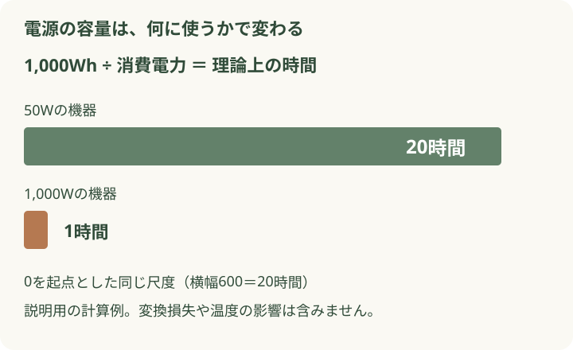

エアコンが止まり、部屋がだんだん冷えてくる。冬の停電では、明かりやスマホと同じくらい、暖かさの備えが気になります。
まずは体を包む、床から離す、一つの部屋に集まる。普段の毛布やカーテンも役立ちます。買い足す前に、家にあるものでできることと、安全に使える暖房を確かめておきましょう。
家にあるもので、今夜の寒さに備えよう
公開日：
 文｜エイスケ（住宅と教育の専門家）
文｜エイスケ（住宅と教育の専門家）

エアコンが止まり、部屋がだんだん冷えてくる。冬の停電では、明かりやスマホと同じくらい、暖かさの備えが気になります。
まずは体を包む、床から離す、一つの部屋に集まる。普段の毛布やカーテンも役立ちます。買い足す前に、家にあるものでできることと、安全に使える暖房を確かめておきましょう。
最初に家の安全を確認し、明かりを確保します。電気ストーブなど電熱器具のスイッチを切り、安全にできる範囲でプラグを抜いておきましょう。 突然電気が戻ったときの火災を防ぐためです。[3]暖かい服、靴下、毛布などを集め、家族が安全に過ごせる一室へ。乳幼児や高齢の方、体調が悪い方がいる場合は、暖かい場所へ移る準備も早めに始めましょう。

乾いた衣類を重ね、首元や足元も保温。毛布を手の届く場所へ。
ラグやマット、布団を使い、冷たい床に直接座り続けないようにします。
窓のカーテンを閉めて熱を逃がしにくくし、使っていない部屋への出入りを減らします。調理や暖房で火を使う場合は、換気を優先。暖かさのために必要な空気の通り道までふさがないようにしましょう。[1]
「灯油なら停電でも大丈夫」と思っていても、送風や制御に電気を使う機器は止まります。平時に一度、暖房の型番と説明書を確認してみてください。[2]
| 暖房・道具 | 停電したとき |
|---|---|
| エアコン・電気ヒーター | 家庭の電源が止まると使えません。 |
| 石油・ガスのファンヒーター | 送風や制御に電気が必要な機種は使えません。 |
| 電源不要の対応ストーブ | 対応機種なら使える場合があります。燃料・換気・置き場所を事前に確認。 |
| 毛布・防寒着・使い捨てカイロ | 電源を使わずに保温できます。カイロは肌に直接当てず、就寝時などの使用を説明書で確認。 |
カセットこんろを暖房代わりに使ったり、炭を室内で燃やしたりするのは避けてください。使うなら、その場所での暖房用として認められた機器を、説明書どおりに。カーテンや布団との距離も確保します。
電源を用意するときは、使いたい機器の消費電力（W）と、電源の容量（Wh）・定格出力（W）を分けて見ます。大きなヒーターを長く動かすには、たくさんの電力が必要です。

まず、家族の健康を保つために欠かせない機器を確認。そのうえで、連絡用のスマホ、LED照明、保温に使う機器など、わが家で必要な順番を決めましょう。出力が足りなければ、容量が大きくても動かせません。医療機器を使う方は、電源との適合、必要な稼働時間、停電時の移動先を医療機関や機器の供給元に相談しておきます。
一酸化炭素中毒のおそれがあります。屋外でも排気が窓や換気口から入らない場所に設置し、説明書に従ってください。充電式のポータブル電源とは別の機器です。[3]
停電が長引き、室内でも寒さがつらい。重ね着をしても体が冷える。そんなときは、自治体の避難所情報や親族宅など、安全に移動できて暖を取れる場所を確認しましょう。
暖を取れる場所の候補：＿＿＿＿＿＿
連絡する人と、移動手段：＿＿＿＿＿＿
持っていくもの：薬・防寒着・充電器・＿＿＿＿
ふらつく、受け答えがおかしい、意識がはっきりしないなどの異変があれば、救急へ連絡してください。温度計の数字だけで判断せず、家族の様子も確認します。[4]
大雪や道路の状況によっては移動自体が危険です。自治体の案内を確認し、無理な外出は避けましょう。
停電中は、電気ストーブなど電熱器具のスイッチを切り、安全にできる範囲でプラグを抜いておきます。[3] 明かりが戻ったら、まず暖房器具の周りを確認。落ちた物や布が触れていないか、コードが傷んでいないかを見てから使います。避難で家を離れる際は、安全にできる時間があればブレーカーを切るよう案内されています。[3]
リフォームを予定しているなら、窓の断熱や、家族が集まれる部屋の寒さ対策も一緒に相談してみましょう。普段から暖かさを逃がしにくい家にしておくことは、暖房が止まったときの備えにもつながります。
Q. ポータブル電源があれば、エアコンも使えますか？ 機器の組み合わせによります。定格出力や容量だけでなく、起動時に必要な電力も確認が必要です。使いたいエアコンの型番と希望時間を販売店に伝えて選びましょう。
Q. 高価な防災用品を先に買うべきですか？ まずは毛布、照明、連絡手段、食品を点検するのがおすすめです。そのうえで、自宅で過ごすために不足するものを買い足すと、無駄を減らせます。
Q. 暖房が使える親族の家へ移ってもいい？ 受け入れと移動経路の安全が確認できれば、有力な選択肢です。普段から連絡しておきましょう。
確認日：2026年11月8日。本文と図は独自に制作。
暖房設備、給湯設備、凍結防止の仕組み、分電盤、非常用電源の切替設備
部屋・建材・設備から機能を確かめる ↗関連記事
この記事を書いた人｜エイスケ
1986年生まれ。実家の工務店・不動産に10年間従事したのち、教育の世界へ。住宅と教育、両方の視点から「豊かな暮らし」をテーマに執筆します。※本コラムは筆者個人の見解・経験に基づくものです。最終的な判断は各分野の専門家にご相談ください。